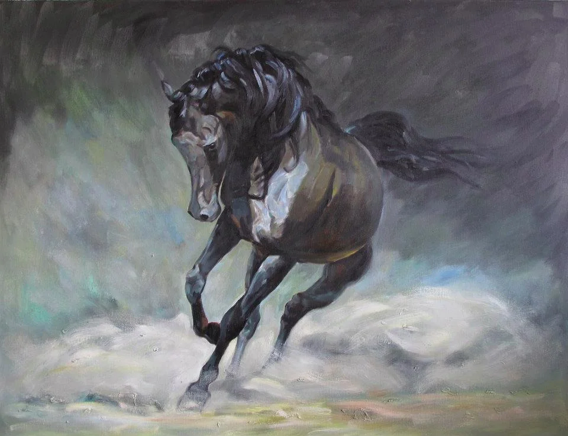

Vasilka Sotirova is a Bulgarian artist, born in Varna in 1965. She trained at the High School of Applied Arts in Tryavna and graduated from the University of Fine Arts in Dupnitsa, and has painted for more than three decades in oil, acrylic, dry pastel and watercolour.
Her work moves between commissioned portraits and pet portraits, the mountains, meadows and old towns of Bulgaria, still life, and abstract painting. Her paintings are held in private collections across Europe and North America, and original work is available to commission and ship worldwide.